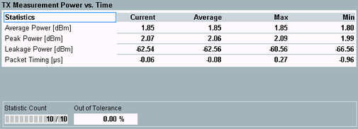
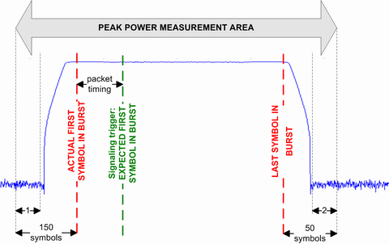

Statistical Power vs. Time Results (BR)
The "Power Scalars" view shows an overview of power results and the corresponding statistics.

Bluetooth multi-evaluation: power results (BR)
The power results table contains the following measurements:
- "Average Power": Average burst power during the carrier-on state. The average power is measured in the time interval starting at the detected 1st bit of the preamble (bit p0) to the last bit of the burst.
- "Peak Power": Maximum power between the first sample of the leakage pre-area and the last sample of the leakage post-area.
- "Leakage Power": Average power during the carrier-off state. The leakage power is measured in the leakage pre-area and the leakage post-area.
- "Packet Timing": Timing error between the expected and actual start of the first symbol of the Bluetooth burst. As the expected start is defined by the signaling trigger, this setting is relevant for combined signal path only (options R&S CMW-KS600/-KS610).

Definition of power results (BR)
1 = leakage pre-area (10 symbols)
2 = leakage post-area (10 symbols)
Additional results in automatic detection mode If automatic burst detection is active ("Input Signal > Detection Mode: Auto"), the "Power Scalars" view also shows the detected packet type, pattern type, and payload length. The number of off-slots is shown when in "ACP 79 Channels" mode. Automatic detection mode is indicated in the upper right corner. |
For query of the results via remote control, see "Power Measurement Results (BR)".